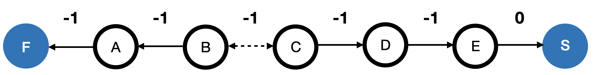
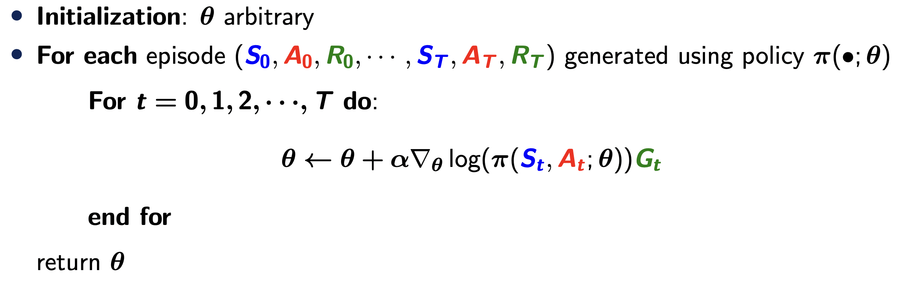
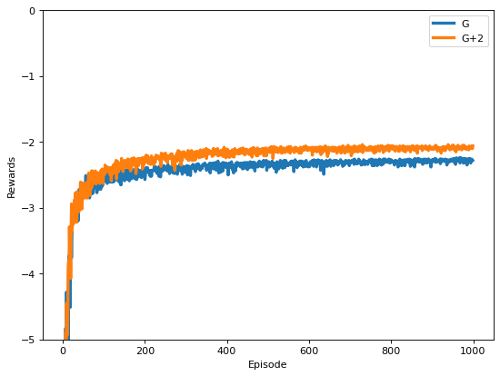

# actions
left = 0
right = 1
class RandomWalk:
def __init__(self, initial_state):
self.initial_state = initial_state
self.state = self.initial_state
self.reward = 0.0
self.is_terminal = False
# write step function that returns obs(next state), reward, is_done
def step(self, action):
if self.state == 5 and action == right:
self.state += 1
self.is_terminal = True
self.reward = 0.0
elif self.state == 1 and action == left:
self.state -= 1
self.is_terminal = True
self.reward = -1.0
else:
if action == left:
self.state -= 1
self.is_terminal = False
self.reward = -1.0
else:
self.state += 1
self.is_terminal = False
self.reward = -1.0
return self.state, self.reward, self.is_terminal
def reset(self):
self.state = self.initial_state
self.reward = 0.0
self.is_terminal = False
return self.stateSolution to HW8
Consider the following example with 7 states:
F - A - B - C - D - E - S
Here, F and S corresponds to the terminal states. On each state, we can choose either to move to the left, or move to the right. Rewards is 0 if we move from E to S and -1 otherwise. The initial location is given by state C, in the middle.
You will apply the REINFORCE algorithm (P26, Lecture 8) to this example to compute an optimal policy. Specifically, since the action is binary, we consider using Example 3 to parametrize (P23, Lecture 8) the policy class. The feature function \(\phi(s)\) can be set to a table lookup function, e.g., \(\phi(s)=[I(s=s_1), I(s=s_2), \cdots, I(s=s_7)]\) where \((s_1,\cdots,s_7)\) corresponds to the state space. You may fix the step size \(\alpha\) to 0.1.
Consider generating 1000 episodes to learn the optimal policy. In each episode, compute the return. This yields a total of 1000 returns. Repeat this procedure 100 times and compute the average return for each episode, aggregated over 100 replications.
As we have discussed in the lecture, the expected value of the policy score is equal to zero. As such, we can add a baseline term to the return \(G_t\) to reduce the variance of the gradient. Under the current setting, the return is at most \(-2\). We may replace \(G_t\) in the REINFORCE algorithm with \(G_t+2\). The resulting gradient is expected to have a smaller variance. Repeat the procedure in Step 2 for this algorithm and compute the average return for each of the 1000 episodes.
Plot the 2000 average returns obtained in Steps 2 and 3.

First, let us review the REINFORCE algorithm

In our example, we combine a table lookup model with a logistic regression model to model \(\pi\). Specifically, for each state \(s\), we can model the probability of moving to the right (or to the left) as \[\exp(\theta_s)/[1+\exp(\theta_s)].\] With some calculations, it is easy to show that the policy score equals \[\begin{eqnarray*} \nabla_{\theta_s} \log(\pi(s,\textrm{right};\theta_s))&=&1-\frac{\exp(\theta_s)}{1+\exp(\theta_s)}=\frac{1}{1+\exp(\theta_s)},\\ \nabla_{\theta_s} \log(\pi(s,\textrm{left};\theta_s))&=&-\frac{\exp(\theta_s)}{1+\exp(\theta_s)}=-\frac{1}{1+\exp(-\theta_s)}. \end{eqnarray*}\] We will use these policy scores to update the policy parameter.
Second, let us implement the random walk environment (we use similar code in Seminar 4)
Next, let us implement the REINFORCE algorithm
import numpy as np
import numpy.random as nr
initial_state = 3
episodes = 1000
env = RandomWalk(initial_state)
def policy(theta):
rand = np.random.random()
a = 1 if (rand < 1/(1+np.exp(-theta))) else 0
return a
alpha = 0.1 # step size
initial_state = 3
env = RandomWalk(initial_state)
rewards = np.zeros((episodes, 2))
nruns = 100
for r in range(nruns):
Theta = np.zeros(7)
for i in range(episodes):
state = env.reset()
done = False
g = 0.0
sar = []
while not done:
a = policy(Theta[state])
next_state, r, done = env.step(a)
sar.append([state, a, r])
g += r
state = next_state
rewards[i,0] += g
## REINFORCE update
for state, a, r in sar:
theta = Theta[state]
if (a==1):
Theta[state] += alpha * g * (1/(1+np.exp(theta)))
else:
Theta[state] -= alpha * g * (1/(1+np.exp(-theta)))
g = g-r
Theta = np.zeros(7)
for i in range(episodes):
state = env.reset()
done = False
g = 0.0
sar = []
while not done:
a = policy(Theta[state])
next_state, r, done = env.step(a)
sar.append([state, a, r])
g += r
state = next_state
rewards[i,1] += g
## REINFORCE update
for state, a, r in sar:
theta = Theta[state]
if (a==1):
Theta[state] += alpha * (g+2) * (1/(1+np.exp(theta)))
else:
Theta[state] -= alpha * (g+2) * (1/(1+np.exp(-theta)))
g = g-r
rewards = rewards / nruns/var/folders/ry/0r22ct6562n2khj823m6xj_00000gn/T/ipykernel_43227/160178280.py:40: RuntimeWarning: overflow encountered in exp
Theta[state] += alpha * g * (1/(1+np.exp(theta)))np.transpose(rewards)array([[ -7.7 , -22.39, -9.05, ..., -2.28, -2.27, -2.28],
[ -7.65, -7.46, -6.52, ..., -2.06, -2.1 , -2.06]])Thetaarray([ 0. , -3.19055275, 1.14485435, 4.6867126 , 5.16057924,
5.32235695, 0. ])Finally, let us visualise these rewards
import matplotlib.pyplot as plt
def plot_return(rewards):
plt.figure(figsize=(8, 6), dpi=80)
for a in rewards:
plt.plot(a, linewidth=3)
plt.xlabel('Episode')
plt.ylim(-5, 0)
plt.ylabel('Rewards')
legend_str = ["G", "G+2"]
plt.legend(legend_str)
plt.show()plot_return(np.transpose(rewards))